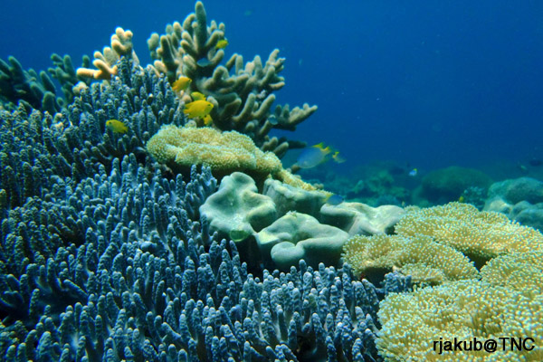
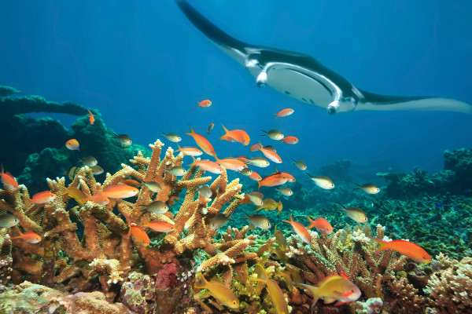
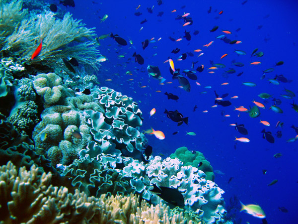
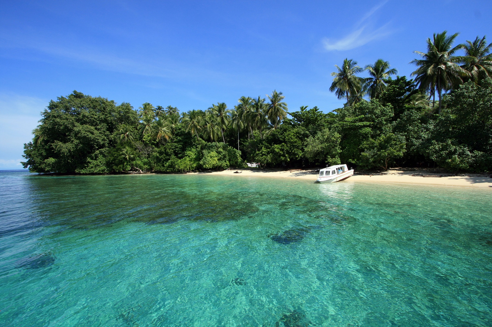
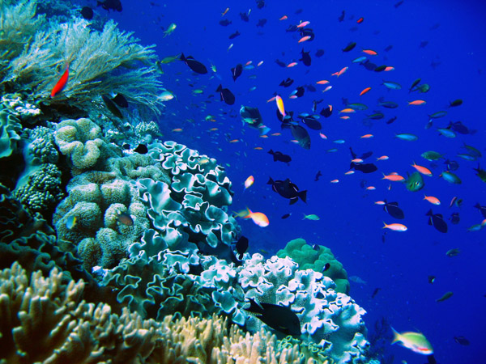
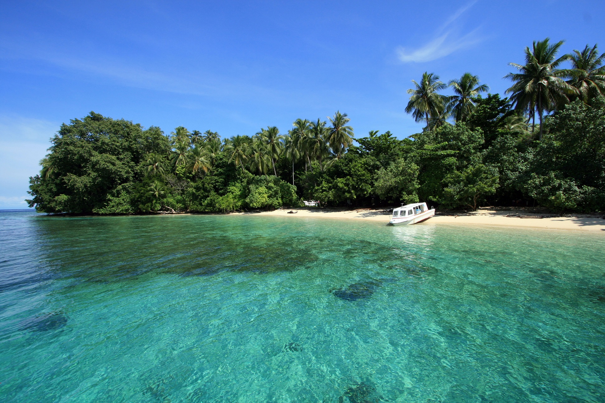

ABOUT THE TOPIC
Siswa dapat membandingkan dan membedakan dua Kawasan Konservasi Laut (KKL) dengan mengevaluasi studi kasus. Kemudian dapat mempelajari cara kerja sistem klasifikasi MPA di Amerika Serikat dan menerapkan sistem itu pada studi kasus MPA.

Comparison
| Provinsi | Kalimantan Timur |
| Kabupaten/Kota | Berau |
| Dasar Hukum | SK Bupati Berau No. 516 Tahun 2013. Tanggal 2 September 2013 |
| Luas Kawasan | 285,266.00 |
 • Kondisi Umum
Keanekaragaman hayati kawasan ini cukup beragam antara lain penyu, mangrove, padang lamun dan terumbu karang. Selain itu, perairan kawasan ini mempunyai biota yang sangat endemic yaitu jenis ubur-ubur. Ubur-ubur jenis ini hanya dijumpai di Indonesia (Pulau Kakaban) dan di Filipina. Adapun jenis ubur-ubur tersebut yaitu Cassiopeia ornate, Mastigiaspapu, Aurelia aurita dan Tripedaliacystophora. Mastigias dan Aurelia adalah jenis ubur-ubur yang sudah kehilangan kemampuan menyengat. Ubur-ubur yang paling kecil ukurannya ini masih dipertanyakan spesisnya, apakah Tripedaliacystophora atau cladonema.
• Letak Geografis
Kawasan ini terletak di Kabupaten Berau, Provinsi Kalimantan Timur. KKP ini tersebar di 4 (empat) Kecamatan yakni di :
• Kondisi Umum
Keanekaragaman hayati kawasan ini cukup beragam antara lain penyu, mangrove, padang lamun dan terumbu karang. Selain itu, perairan kawasan ini mempunyai biota yang sangat endemic yaitu jenis ubur-ubur. Ubur-ubur jenis ini hanya dijumpai di Indonesia (Pulau Kakaban) dan di Filipina. Adapun jenis ubur-ubur tersebut yaitu Cassiopeia ornate, Mastigiaspapu, Aurelia aurita dan Tripedaliacystophora. Mastigias dan Aurelia adalah jenis ubur-ubur yang sudah kehilangan kemampuan menyengat. Ubur-ubur yang paling kecil ukurannya ini masih dipertanyakan spesisnya, apakah Tripedaliacystophora atau cladonema.
• Letak Geografis
Kawasan ini terletak di Kabupaten Berau, Provinsi Kalimantan Timur. KKP ini tersebar di 4 (empat) Kecamatan yakni di :
• Kec. Pulau Derawan: 42583.8 Ha
• Kec. Pulau Maratua: 74782.88 Ha
• Kec. Batu Putih: 55534.89 Ha
• Kec. Biduk Biduk: 14651.28 Ha
 • Kondisi Perairan Pulau Kakaban memiliki satu danau besar yaitu Danau Kakaban dan 6 danau-danau kecil. Empat diantaranya telah memiliki nama yaitu Danau Kehedaing, Danau Manimpa, Danau Batu Raja, dan Danau Tanjung Gemuk. Kedalaman danau berkisar antara 2-15 meter. Salinitas air danau lebih rendah daripada salinitas air laut yakni berkisar 24-26 ppt. Secara umum, nilai salinitas permukaan di Kepulauan Kakaban secara umum berkisar antara 32,5 ppt - 33,0 ppt, sedangkan daerah yang dipengaruhi oleh laut lepas bernilai sekiatr 33,5 ppt. Kecenderungan berfluktuasinya nilai salinitas pada perairan di Kepulauan ini sebagai akibat dari pengaruh percampuran air tawar yang berasal dari sungai-sungai yang mengalir ke arah selatan sampai ke timur menuju Pulau Kakaban. Kecepatan angin minimal 4,5 knot pada bulan Oktober dan November dengan arah barat laut (3300), dan kecepatan angin maksimum 5,5 knot terjadi pada bulan Juli dan Agustus dengan arah barat daya (2700). Arah angin umumnya berasal dari barat laut.  • Kondisi Ekosistem Perairan Di sepanjang Danau Kakaban, ditemukan jenis tumbuhan mangrove, antara lain Rhizophora mucronata, Rhizophora stylosa, Xylocarpur granatum, Bruguiera gymnorrhizadan Excoecaria agalocha. Jenis tersebut tumbuh di atas substrat dari pecahan batu karang, dan menempati areal yang lebarnya sekitar 10 meter dari pantai. Seeding dari jenis Rhizophora mucronata dan Bruguiera gymnorrhiza yang ditemukan tumbuh di sekitar perakaran dan bongkahan batu karang. Bagian utara reef flat Pulau Kakaban, terumbu karang didominasi oleh jenis Acropora sp, Porites sp, Pocillopora sp dengan kedalaman kurang dari 1 meter. Makin jauh ke arah tubir terumbu karang semakin bervariasi jenisnya. Komunitas karang di Pulau Kakaban dikategorikan dalam kondisi baik karena tutupannya mencapai 66% dengan kecerahan air berkisar antara 10-25 meter. Jenis-jenis ikan karang yang umumnya dijumpai di perairan laut Pulau Kakaban dan sekitarnya didominasi oleh jenis-jenis dari suku pomacentridae, dan lutjanidae, dan ikan yang termasuk kelompok schooling fish yaitu acanthuridae. Ikan kupu-kupu (chaetodontidae) didominasi oleh jenis Chaetodon kleinii dan Chaetodon baronesa. Jenis - jenis ikan karang yang dijumpai pada Danau Kakaban umumnya ikan-ikan yang telah beradaptasi dengan kondisi salinitas air laut yang tergolong payau (25%) yaitu dari suku Gobiidae dan Apogonidae. Jenis-jenis ikan tersebut lebih berkonsentrasi pada areal dekat pantai diantara akar - akar mangrove dan tumbuhan laut lainnya. Lamun yang tumbuh di daerah ini sangat jarang yaitu terdiri dari 6 jenis dengan presentasi tutupan sekitar spesies yang dominan yaitu Cymodecea rotundata dan Thalassia hemprichii. Adapun jenis lain yang tumbuh antara lain seperti Halodule pinifolia, Halophila ovalls dan Halodule uninervis banyak tumbuh di sekitar 5-10 meter dari garis pantai. Luas areal lamun hanya sekitar 50x100 m2. Substrat di daerah lamun berupa pasir putih kecoklatan agak kasar dengan sedikit kandungan lumpur di bagian dasarnya. Selain itu, perairan laut Pulau Kakaban mempunyai biota yang sangat endemik yaitu jenis ubur-ubur. Ubur-ubur jenis ini hanya dijumpai di indonesia (Pulau Kakaban) dan di Filipina. Adapun jenis ubur-ubur tersebut yaitu Cassiopeia ornate, Mastigias papu, Aurelia aurita dan Tripedalia cystophora. Mastigias dan Aurelia adalah jenis ubur-ubur yang sudah kehilangan kemampuan menyengat. Ubur-ubur yang paling kecil ukurannya ini masih dipertanyakan spesisnya, apakah Tripedalia cystophora atau cladonema. Selain ubur-ubur, di Danau Kakaban juga terdapat jenis biota Halimeda sp, Caulerpa sp, Padina sp dan Bryopsis sp, anemon laut, ubur-ubur serata kepiting. Sedangkan pulau - pulau yang di sekitarnya yaitu merupakan habitat peneluran jenis penyu laut yang dilindungi, Pulau Sangakali, Pulau Derawan dan Pulau Samama.
| Provinsi | Papua |
| Kabupaten/Kota | Biak Numfor |
| Dasar Hukum | SK Bupati nomor : 21 tahun 2009 tangal 17 April 2009 |
| Luas Kawasan | 24,910.00 |
 • Kondisi Umum
Kabupaten Biak Numfor merupakan salah satu kabupaten di Provinsi Papua yang berada di sebelah utara daratan Pulau Papua di daerah kepala burung, tepatnya di Teluk Cendrawasih. Pada tahun 2003, wilayah Supiori berpisah dan menjadi kabupaten tersendiri, terlepas dari kabupaten induknya berdasarkan UU No. 35 Tahun 2003 tentang Pembentukan Kabupaten Supiori di Provinsi Papua.
Dasar hukum penetapan Kawasan Konservasi Laut Daerah (KKLD) adalah SK. Bupati No. 21 tahun 2009 yang ditandatangani tanggal 17 April 2009.
• Letak Geografis
KKLD Biak Numfor terletak pada posisi geografis 01002'26" - 01017'01" LS dan 136006'31" - 136029'51" BT memiliki luas kawasan 24.910 Ha. Kabupaten Biak Numfor terdiri dari 2 pulau kecil yaitu pulau Biak dan Pulau Numfor, serta lebih dari 42 pulau sangat kecil yang termasuk ke dalam Kepulauan Padaido. Wilayah Kabupaten Biak Numfor berbatasan dengan Kabupaten Manokwari disebelah barat, sebelah utara dengan Samudera Pasifik, sebelah timur dengan Samudera Pasifik, dan sebelah selatan dengan Selat Yapen.

• Kondisi Perairan
Pola arus di Perairan Biak dipengaruhi oleh arus Samudera Pasifik sebelah Timur. Arah arus permukaan bergerak ke arah Timur dengan kecepatan 18-38 cm/det pada bulan Februari sampai Juli. Sedangkan pada bulan Agustus arah arus berubah ke arah Barat dengan kecepatan 24-75 cm/det. Kedua arus tersebut dikenal dengan arus pantai Papua. Sementara itu, berdasarkan hasil pengukuran, pada semua stasiun pengamatan didapatkan kisaran suhu permukaan air laut antara 28 - 310C, rata-rata salinitas berkisar 33 ppm, dan rata-rata pH perairan adalah pH 5,54.
• Kondisi Ekosistem Perairan
Mangrove yang berkembang di pesisir Biak Timur dan Oridek hanya berasal dari 4 jenis yaitu Rhizophora mucronata, R. apiculata, Bruguiera gymnorrhiza dan Nypa. Kerapatan yang tinggi berasal dari jenis R. mucronata dan B. gymnorrhiza yang hampir ditemukan di semua lokasi.
Kabupaten Biak Numfor sebagai salah satu lokasi COREMAP II, mempunyai kondisi terumbu karang yang rata-rata kurang bagus. Hasil survei yang di lakukan oleh LIPI tahun 2006, rataan terumbu karang di Kecamatan Biak Timur diperkirakan 797 Ha, sedangkan di Pulau Padaido menampakkan rataan terumbu karang yang cukup luas dibandingkan dengan yang ada di Kecamatan Biak Timur, yaitu sekitar 6274 ha. Sementara itu, di Kecamatan Biak Numfor persentase tutupan tertinggi didominasi oleh karang mati yang tertutup alga dengan persentase 10-89,11%, dan persentase tutupan karang hidup sebesar 2,88%. Dan hasil survey di Kecamatan Padaido didapatkan bahwa persentase karang hidup tertinggi tercatat di Pulau Owi dengan persentase sekitar 1 - 74,07%, sementara untuk karang Acropora tutupannya bervariasi antara 1,9% - 64,81%, karang lunak sekitar 1,04% - 42,86%.

Hasil sensus visual ikan menunjukkan bahwa jumlah jenis ikan karang bervariasi antara 12 sampai 61 jenis dengan kelimpahan ikan karang berkisar 2.880 - 59.080 ekor/ha. Adapun beberapa ikan target yang ditemukan antara lain Plectropomus areolatus, Gracila albomarginata, Variola louti (Serranidae), Caranx ignobilis, Elagatis bipinnulata (Carangidae), Aprion virescens (Lutjanidae), Sphyraena barracuda (Sphyraenidae), dan Cheilinus undulatus (Labridae).
Selain terumbu karang, hasil survei di sepanjang pesisir Biak Timur dan Oridek ditemukan ada 4 jenis lamun, yaitu Thallasia hemprichii, Cymodocea rotundata, Syringodium isoetifolium dan Enhalus acoroides. Adapun rata-rata persentase penutupan berkisar 14,17% yang ditemukan di Yenusi dan 71,67% yang ditemukan di Woniki.
• Kondisi Umum
Kabupaten Biak Numfor merupakan salah satu kabupaten di Provinsi Papua yang berada di sebelah utara daratan Pulau Papua di daerah kepala burung, tepatnya di Teluk Cendrawasih. Pada tahun 2003, wilayah Supiori berpisah dan menjadi kabupaten tersendiri, terlepas dari kabupaten induknya berdasarkan UU No. 35 Tahun 2003 tentang Pembentukan Kabupaten Supiori di Provinsi Papua.
Dasar hukum penetapan Kawasan Konservasi Laut Daerah (KKLD) adalah SK. Bupati No. 21 tahun 2009 yang ditandatangani tanggal 17 April 2009.
• Letak Geografis
KKLD Biak Numfor terletak pada posisi geografis 01002'26" - 01017'01" LS dan 136006'31" - 136029'51" BT memiliki luas kawasan 24.910 Ha. Kabupaten Biak Numfor terdiri dari 2 pulau kecil yaitu pulau Biak dan Pulau Numfor, serta lebih dari 42 pulau sangat kecil yang termasuk ke dalam Kepulauan Padaido. Wilayah Kabupaten Biak Numfor berbatasan dengan Kabupaten Manokwari disebelah barat, sebelah utara dengan Samudera Pasifik, sebelah timur dengan Samudera Pasifik, dan sebelah selatan dengan Selat Yapen.

• Kondisi Perairan
Pola arus di Perairan Biak dipengaruhi oleh arus Samudera Pasifik sebelah Timur. Arah arus permukaan bergerak ke arah Timur dengan kecepatan 18-38 cm/det pada bulan Februari sampai Juli. Sedangkan pada bulan Agustus arah arus berubah ke arah Barat dengan kecepatan 24-75 cm/det. Kedua arus tersebut dikenal dengan arus pantai Papua. Sementara itu, berdasarkan hasil pengukuran, pada semua stasiun pengamatan didapatkan kisaran suhu permukaan air laut antara 28 - 310C, rata-rata salinitas berkisar 33 ppm, dan rata-rata pH perairan adalah pH 5,54.
• Kondisi Ekosistem Perairan
Mangrove yang berkembang di pesisir Biak Timur dan Oridek hanya berasal dari 4 jenis yaitu Rhizophora mucronata, R. apiculata, Bruguiera gymnorrhiza dan Nypa. Kerapatan yang tinggi berasal dari jenis R. mucronata dan B. gymnorrhiza yang hampir ditemukan di semua lokasi.
Kabupaten Biak Numfor sebagai salah satu lokasi COREMAP II, mempunyai kondisi terumbu karang yang rata-rata kurang bagus. Hasil survei yang di lakukan oleh LIPI tahun 2006, rataan terumbu karang di Kecamatan Biak Timur diperkirakan 797 Ha, sedangkan di Pulau Padaido menampakkan rataan terumbu karang yang cukup luas dibandingkan dengan yang ada di Kecamatan Biak Timur, yaitu sekitar 6274 ha. Sementara itu, di Kecamatan Biak Numfor persentase tutupan tertinggi didominasi oleh karang mati yang tertutup alga dengan persentase 10-89,11%, dan persentase tutupan karang hidup sebesar 2,88%. Dan hasil survey di Kecamatan Padaido didapatkan bahwa persentase karang hidup tertinggi tercatat di Pulau Owi dengan persentase sekitar 1 - 74,07%, sementara untuk karang Acropora tutupannya bervariasi antara 1,9% - 64,81%, karang lunak sekitar 1,04% - 42,86%.

Hasil sensus visual ikan menunjukkan bahwa jumlah jenis ikan karang bervariasi antara 12 sampai 61 jenis dengan kelimpahan ikan karang berkisar 2.880 - 59.080 ekor/ha. Adapun beberapa ikan target yang ditemukan antara lain Plectropomus areolatus, Gracila albomarginata, Variola louti (Serranidae), Caranx ignobilis, Elagatis bipinnulata (Carangidae), Aprion virescens (Lutjanidae), Sphyraena barracuda (Sphyraenidae), dan Cheilinus undulatus (Labridae).
Selain terumbu karang, hasil survei di sepanjang pesisir Biak Timur dan Oridek ditemukan ada 4 jenis lamun, yaitu Thallasia hemprichii, Cymodocea rotundata, Syringodium isoetifolium dan Enhalus acoroides. Adapun rata-rata persentase penutupan berkisar 14,17% yang ditemukan di Yenusi dan 71,67% yang ditemukan di Woniki.